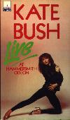
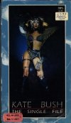
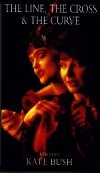

Live At The Hammersmith Odeon (1981): 
TV special of Kate's only concert tour, unfortunately it contains only one hour out of the two and a half hour show. Now also available as CD+video double pack (PAL and NTSC, the latter from Canada).
Tracks:

The Single File (December 1983): 
Contains all of Kate's video up till 1983. Similar to The Whole Story, but contains five videos not on The Whole Story and it lacks the newer videos. Not available in the USA, but it's available on import from Canada.
Tracks:

Hair Of The Hound (June 16, 1986):
This tape is now out of date since all four videos from the Hounds of Love album are also on The Whole Story. You might want to get the LaserDisc, since it's in CAV (Constant Angular Velocity) instead of CLV (Constant Linear Velocity) like The Whole Story, that means you have better freeze frame than with CLV LaserDiscs.
Tracks:

Contains most of Kate's videos up to 1986: All songs from the corresponding album plus the video for The Big Sky. The video to Experiment IV is only available here, so TSF + HOTH isn't sufficient. A new PAL LaserDisc now also contains the three videos from The Sensual World. A 2 videoCD (CD-ROMs with MPEG films for computers/ CD-I players) now available contains in addition to the new LaserDisc version also Rubberband Girl and Moments Of Pleasure
Tracks: see albums above.

Contains three videos from that album and interview footage with excerpts from a lot of other videos. The American version (video tape as well as LaserDisc) contains much less interview footage than the British version. The British version is the complete 1989 VH-1 special.
Tracks:
- Interview
- The Sensual World
- This Woman's Work
- Love And Anger

The Line, The Cross, and The Curve (1994): 
The new film around 6 songs from the album The Red Shoes. TLTC&TC is the first "full length" film Kate directed (even though it is only 43 minutes long, "full length" is used to distinguish it from the music videos Kate directed).
The plot is basically an extended telling of the lyrics of the the title cut to "The Red Shoes". The film stars not only Kate, but Miranda Richardson (from "The Crying Game"), Lindsay Kemp (Kate's mime tutor and mentor), and Lily (of whom the song Lily was written for).
Tracks:

{kind=link}
{kind=link}
{kind=link}
{kind=link}
{kind=link}
{kind=link}